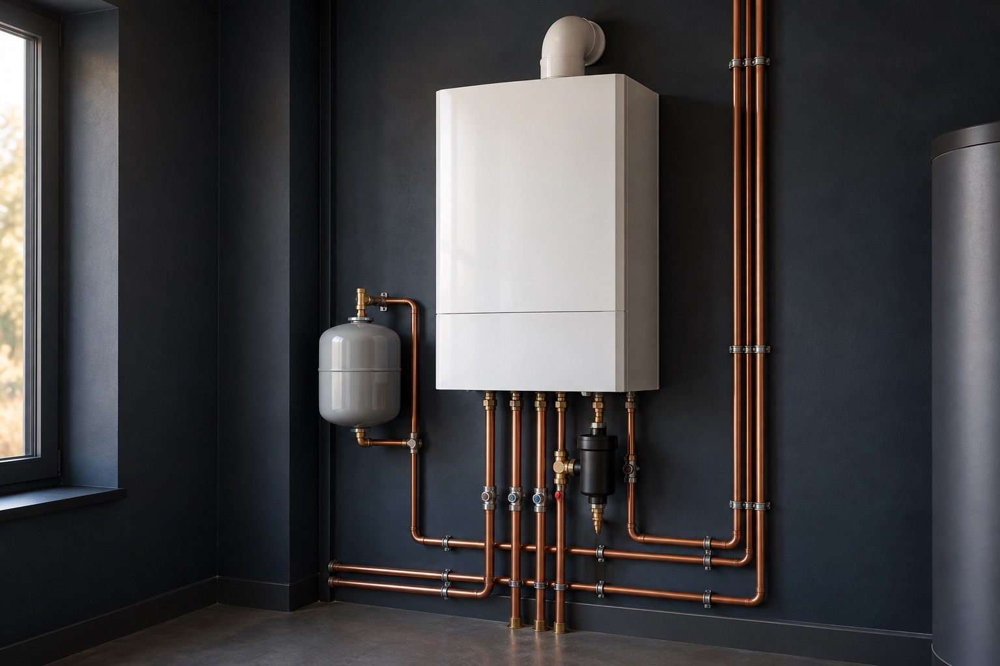

SPECIALITATEA PRINCIPALĂCentrale termice
01Centrala nu mai încălzește sau ai nevoie de o lucrare la instalația ei? Începem cu problema ta și stabilim ce este de făcut.
- Probleme de încălzire și apă caldă
- Lucrări la instalația centralei
- Intervenții pentru defecțiuni